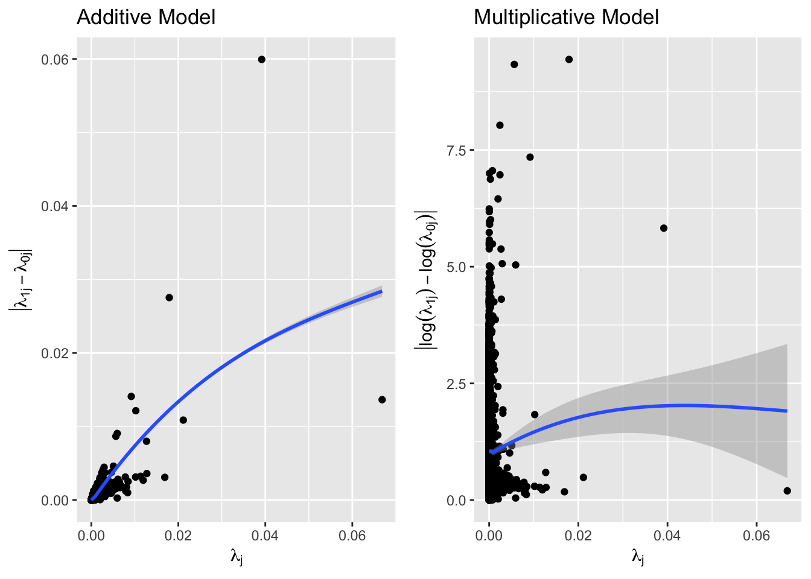
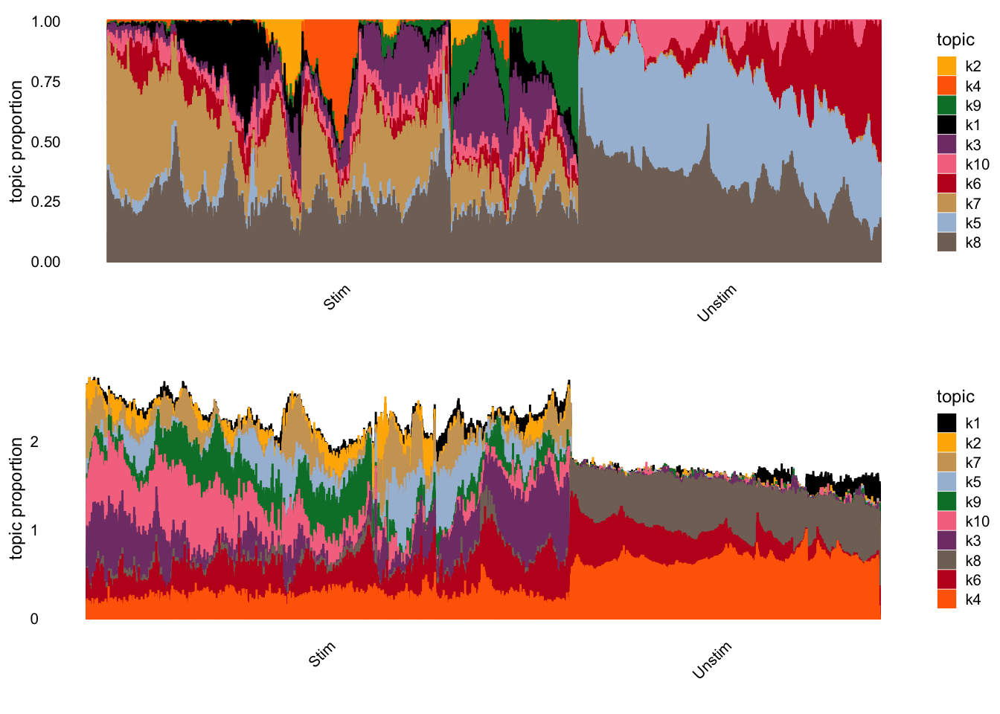
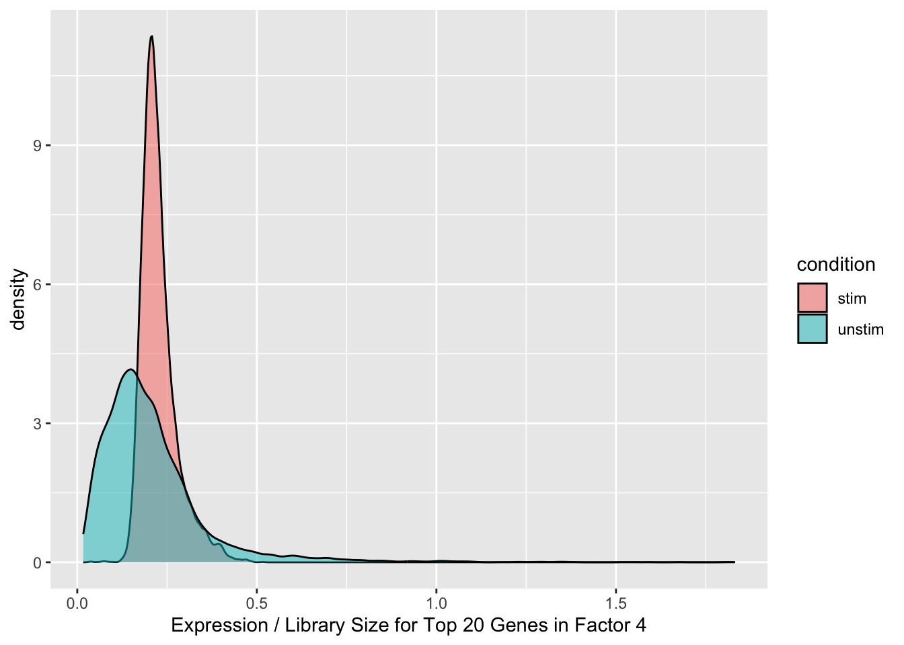
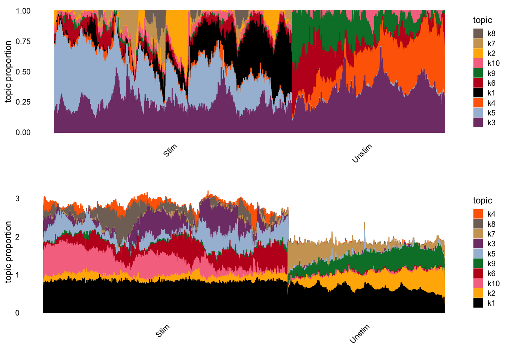
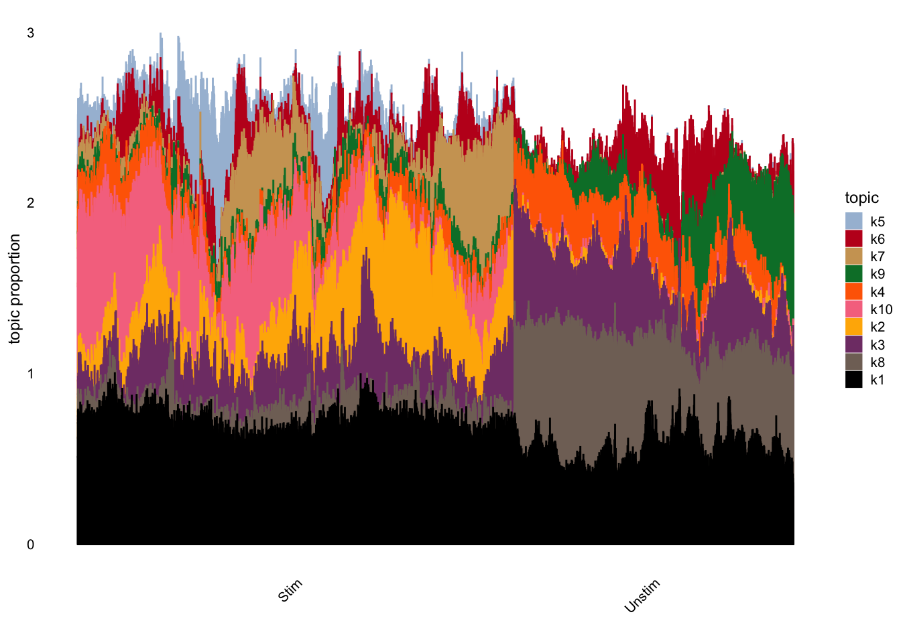

Last updated: 2024-06-03
Checks: 6 1
Knit directory: log1p_experiments/
This reproducible R Markdown analysis was created with workflowr (version 1.7.1). The Checks tab describes the reproducibility checks that were applied when the results were created. The Past versions tab lists the development history.
The R Markdown is untracked by Git. To know which version of the R
Markdown file created these results, you’ll want to first commit it to
the Git repo. If you’re still working on the analysis, you can ignore
this warning. When you’re finished, you can run
wflow_publish to commit the R Markdown file and build the
HTML.
Great job! The global environment was empty. Objects defined in the global environment can affect the analysis in your R Markdown file in unknown ways. For reproduciblity it’s best to always run the code in an empty environment.
The command set.seed(20240402) was run prior to running
the code in the R Markdown file. Setting a seed ensures that any results
that rely on randomness, e.g. subsampling or permutations, are
reproducible.
Great job! Recording the operating system, R version, and package versions is critical for reproducibility.
Nice! There were no cached chunks for this analysis, so you can be confident that you successfully produced the results during this run.
Great job! Using relative paths to the files within your workflowr project makes it easier to run your code on other machines.
Great! You are using Git for version control. Tracking code development and connecting the code version to the results is critical for reproducibility.
The results in this page were generated with repository version e60f709. See the Past versions tab to see a history of the changes made to the R Markdown and HTML files.
Note that you need to be careful to ensure that all relevant files for
the analysis have been committed to Git prior to generating the results
(you can use wflow_publish or
wflow_git_commit). workflowr only checks the R Markdown
file, but you know if there are other scripts or data files that it
depends on. Below is the status of the Git repository when the results
were generated:
Ignored files:
Ignored: .Rhistory
Untracked files:
Untracked: analysis/nkt_analysis.Rmd
Unstaged changes:
Modified: analysis/link_simulations2.Rmd
Note that any generated files, e.g. HTML, png, CSS, etc., are not included in this status report because it is ok for generated content to have uncommitted changes.
There are no past versions. Publish this analysis with
wflow_publish() to start tracking its development.
Here, I analyze data from this study of the effect of PMA/Ionomycin stimulation on natural killer T cells derived from humans.
In particular, I am interested in understanding the differences in representation between Poisson NMF with a log1p-link and Poisson NMF with an identity link.
First, I load in the data.
library(dplyr)
library(Matrix)
library(fastTopics)
m1 <- as.matrix(Matrix::readMM(
'~/Downloads/GSE128243_RAW/GSM3669244_NKT_HS_Unstim1_matrix.mtx'
))
genes1 <- readr::read_tsv("~/Downloads/GSE128243_RAW/GSM3669244_NKT_HS_Unstim1_genes.tsv",
col_names = c("ensembl", "name"))
rownames(m1) <- genes1$ensembl
m2 <- as.matrix(Matrix::readMM('~/Downloads/GSE128243_RAW/GSM3669245_NKT_HS_Unstim2_matrix.mtx'))
genes2 <- readr::read_tsv(
"~/Downloads/GSE128243_RAW/GSM3669245_NKT_HS_Unstim2_genes.tsv",
col_names = c("ensembl", "name")
)
rownames(m2) <- genes2$ensembl
m3 <- as.matrix(Matrix::readMM('~/Downloads/GSE128243_RAW/GSM3669246_NKT_HS_Unstim3_matrix.mtx'))
genes3 <- readr::read_tsv(
"~/Downloads/GSE128243_RAW/GSM3669246_NKT_HS_Unstim3_genes.tsv",
col_names = c("ensembl", "name")
)
rownames(m3) <- genes3$ensembl
m4 <- as.matrix(Matrix::readMM('~/Downloads/GSE128243_RAW/GSM3669247_NKT_HS_Stim1_matrix.mtx'))
genes4 <- readr::read_tsv(
"~/Downloads/GSE128243_RAW/GSM3669247_NKT_HS_Stim1_genes.tsv",
col_names = c("ensembl", "name")
)
rownames(m4) <- genes4$ensembl
m5 <- as.matrix(Matrix::readMM('~/Downloads/GSE128243_RAW/GSM3669248_NKT_HS_Stim2_matrix.mtx'))
genes5 <- readr::read_tsv("~/Downloads/GSE128243_RAW/GSM3669248_NKT_HS_Stim2_genes.tsv",
col_names = c("ensembl", "name")
)
rownames(m5) <- genes5$ensembl
m6 <- as.matrix(Matrix::readMM('~/Downloads/GSE128243_RAW/GSM3669249_NKT_HS_Stim3_matrix.mtx'))
genes6 <- readr::read_tsv("~/Downloads/GSE128243_RAW/GSM3669249_NKT_HS_Stim3_genes.tsv",
col_names = c("ensembl", "name")
)
rownames(m6) <- genes6$ensembl
m <- cbind(
m1, m2, m3, m4, m5, m6
)
samples <- c(
rep("Unstim", ncol(m1)),
rep("Unstim", ncol(m2)),
rep("Unstim", ncol(m3)),
rep("Stim", ncol(m4)),
rep("Stim", ncol(m5)),
rep("Stim", ncol(m6))
)
rm(m1, m2, m3, m4, m5, m6)
m <- as(m, "sparseMatrix")
#m <- m[(rowSums(m) >= 10) | (apply(m, 1, max) >= 5), ]
m <- m[, Matrix::colSums(m) > 0]
m <- m[Matrix::rowSums(m) > 0, ]
m <- Matrix::t(m)
stim_m <- m[samples == "Stim",]
unstim_m <- m[samples == "Unstim",]The experiment has \(14,119\) cells, with \(17,619\) genes that are expressed in at least \(1\) cell. Only \(3.6\%\) of entries are non-zero.
Before diving into the matrix factorizations, I wanted to better understand the differences in gene expression between the stimuated and unstimulated conditions. Following Yusha’s previous analysis, I suppose that for all observed cells \(i = 1, \dots, n\) and genes \(j = 1, \dots, m\), we have \[y_{ij} | s_{i}, t \sim Poisson(s_{i} \lambda_{tj}),\] where \(s_{i}\) is the total number of mRNAs observed in cell \(i\), and \(c\) is an indicator variable indicating if cell \(i\) comes from the stimulated (\(t = 1\)) or unstimulated (\(t = 0\)) condition. Now, under the assumption of multiplicative effects, for a given gene \(j\) we can write \[\lambda_{tj} = c_{tj} \lambda_{j},\] where \(\lambda_{j}\) is the ``background’’ rate for gene \(j\) and \(c_{tj}\) is the multiplicative effect of treatment \(t\). In this case, \[\log(\lambda_{1j} / \lambda_{0j}) = \log(c_{1j} / c_{0j}),\] which is independent of \(\lambda_{j}\). Alternatively, if effects are more consistent with an additive model, we can write \[\lambda_{tj} = a_{tj} + \lambda_{j}.\] In this case, \[\lambda_{1j} - \lambda_{0j} = a_{1j} - a_{0j},\] which is also independent of \(\lambda_{j}\).
On the NKT dataset, I estimated all values of \(\lambda\) above with an MLE and excluded genes that had no counts in the entirety of one condition. Below are the results:
s_stim <- sum(stim_m)
s_unstim <- sum(unstim_m)
lambda_g <- Matrix::colSums(m) / (s_stim + s_unstim)
lambda_stim <- Matrix::colSums(stim_m) / s_stim
lambda_unstim <- Matrix::colSums(unstim_m) / s_unstim
lambda_df <- data.frame(
lambda_g = lambda_g,
lambda_stim = lambda_stim,
lambda_unstim = lambda_unstim
)
# filter out genes that are 0 in one condition
lambda_df <- lambda_df %>%
dplyr::filter(
lambda_stim > 0 & lambda_unstim > 0
)
lambda_df <- lambda_df %>%
dplyr::mutate(
add_diff = abs(lambda_stim - lambda_unstim),
mult_diff = abs(log(lambda_stim) - log(lambda_unstim))
)
library(ggplot2)
library(latex2exp)
g1 <- ggplot(data = lambda_df) +
geom_point(aes(x = lambda_g, y = add_diff)) +
geom_smooth(aes(x = lambda_g, y = add_diff)) +
xlab(TeX("$\\lambda_{j}$")) +
ylab(TeX("$|\\lambda_{1j} - \\lambda_{0j}|$")) +
ggtitle("Additive Model")
g2 <- ggplot(data = lambda_df) +
geom_point(aes(x = lambda_g, y = mult_diff)) +
geom_smooth(aes(x = lambda_g, y = mult_diff)) +
xlab(TeX("$\\lambda_{j}$")) +
ylab(TeX("$|\\log(\\lambda_{1j}) - \\log(\\lambda_{0j})|$")) +
ggtitle("Multiplicative Model")
library(ggpubr)
ggarrange(g1, g2, nrow = 1)
Much like in Yusha’s analysis, it seems fairly clear that a multiplicative model is more reasonable than an additive model for this data. One future improvement to this could be de-noising (i.e. mean-regressing) the estimates of \(\lambda\).
Given the analysis above, it seems reasonable to expect that a factor model with a \(log1p\) link will provide a more ``parsimonious’’ representation of the data. In particular, based on previous simulation experiments I have done, I would expect that the factors in the identity link model will be driven by genes that are highest at baseline, where the factors in the \(log1p\) model will be driven by changes relative to baseline (which seems more desirable).
To start, I compare the two models with rank \(10\) with random initializations. To fit the \(log1p\) link, I am using a quadratic approximation to the terms in the log-likelihood corresponding to \(0\) counts.
set.seed(1)
log1p_fit_rand_init <- passPCA::fit_factor_model_log1p_quad_approx_sparse(
Y = m,
K = 10,
approx_range = c(0, 1.25),
maxiter = 100,
s = rowSums(m) / mean(rowSums(m))
)
library(fastTopics)
# now, I want to fit Poisson NMF models
set.seed(1)
nmf_pois_rand_init <- fit_poisson_nmf(
m,
k = 10,
numiter = 100,
control = list(nc = 7),
init.method = "random"
)library(glue)
# load in fitted model
log1p_fit_rand_init <- readr::read_rds(glue("{data_dir}/log1p_nkt_rand_init_k10.rds"))
nmf_pois_rand_init <- readr::read_rds(glue("{data_dir}/pois_nmf_nkt_rand_init_k10.rds"))I first normalize the fits so that the maximum of each column of the loadings is \(1\).
max_col <- apply(log1p_fit_rand_init$U, 2, max)
log1p_LL <- sweep(log1p_fit_rand_init$U, 2, max_col, FUN = "/")
log1p_FF <- sweep(log1p_fit_rand_init$V, 2, max_col, FUN = "*")
max_col <- apply(nmf_pois_rand_init$L, 2, max)
nmf_LL <- sweep(nmf_pois_rand_init$L, 2, max_col, FUN = "/")
nmf_FF <- sweep(nmf_pois_rand_init$F, 2, max_col, FUN = "*")Now, we can examine the structure plots from the two models:
# cell.type <- factor(samples)
#
# # Downsample the number of cells and sort them using tSNE.
# set.seed(8675309)
# cell.idx <- numeric(0)
# cell.types <- levels(cell.type)
# for (i in 1:length(cell.types)) {
# which.idx <- which(cell.type == cell.types[i])
# # Downsample common cell types.
# if (length(which.idx) > 4000) {
# which.idx <- sample(which.idx, 4000)
# }
# # Don't include rare cell types.
# if (length(which.idx) > 20) {
# # Sort using tsne.
# tsne.res <- Rtsne::Rtsne(
# log1p_LL[which.idx, ],
# dims = 1,
# pca = FALSE,
# normalize = FALSE,
# perplexity = min(100, floor((length(which.idx) - 1) / 3) - 1),
# theta = 0.1,
# max_iter = 1000,
# eta = 200,
# check_duplicates = FALSE
# )$Y[, 1]
# which.idx <- which.idx[order(tsne.res)]
# cell.idx <- c(cell.idx, which.idx)
# }
# }
#
# cell.type <- cell.type[cell.idx]
# cell.type <- droplevels(cell.type)
#
# log1p_LL <- log1p_LL[cell.idx, ]
# nmf_LL <- nmf_LL[cell.idx, ]
# library(tidyr)
# library(purrr)
# library(dplyr)
# library(stringi)
# library(stringr)
#
# make.heatmap.tib <- function(LL) {
# tib <- as_tibble(scale(LL, center = FALSE, scale = apply(LL, 2, max))) %>%
# mutate(Cell.type = cell.type) %>%
# arrange(Cell.type) %>%
# mutate(Cell.idx = row_number())
#
# tib <- tib %>%
# pivot_longer(
# -c(Cell.idx, Cell.type),
# names_to = "Factor",
# values_to = "Loading",
# values_drop_na = TRUE
# ) %>%
# mutate(Factor = as.numeric(str_extract(Factor, "[0-9]+")))
#
# return(tib)
# }
#
# log1p_tib <- make.heatmap.tib(log1p_LL)
# nmf_tib <- make.heatmap.tib(nmf_LL)
#
# heatmap.tib <- log1p_tib %>% mutate(Method = "log1p Poisson NMF") %>%
# bind_rows(nmf_tib %>% mutate(Method = "Identity Poisson NMF")) %>%
# mutate(Method = factor(Method, levels = c("log1p Poisson NMF", "Identity Poisson NMF")))
#
# tib <- heatmap.tib %>%
# group_by(Cell.type, Cell.idx) %>%
# summarize()
#
# cell_type_breaks <- c(1, which(tib$Cell.type[-1] != tib$Cell.type[-nrow(tib)]))
# label_pos <- cell_type_breaks / 2 + c(cell_type_breaks[-1], nrow(tib)) / 2
#
# library(ggplot2)
#
# plt <- ggplot(heatmap.tib, aes(x = Factor, y = -Cell.idx, fill = Loading)) +
# geom_tile() +
# scale_fill_gradient(low = "white", high = "firebrick") +
# labs(y = "") +
# scale_y_continuous(breaks = -label_pos,
# minor_breaks = NULL,
# labels = levels(cell.type)) +
# scale_x_continuous(breaks = seq(0, 30, 5)) +
# theme_minimal() +
# geom_hline(yintercept = -cell_type_breaks, size = 0.1) +
# facet_wrap(~Method, ncol = 1, axes = "all") +
# theme(legend.position = "none",
# strip.text = element_text(size = 16))
#
# pltp1 <- structure_plot(nmf_pois_rand_init, grouping = samples, n=1e6)
p2 <- structure_plot(log1p_LL, grouping = samples, n=1e6)
ggarrange(p1, p2, nrow = 2) Based on the structure plots, it seems like the log1p link represents the stimulated cells a bit more distinctly than than the unstimulated cells. In the log1p model, factors 4 and 6 are represented strongly in both the stimulated and unstimulated cells. However, factors 8 and 1 are mostly seen in the unstimulated cells. In the NMF model, all factors represented in the unstimulated cells also appear to be represented in the stimulated cells.
library(clusterProfiler)
library(fgsea)
library(AnnotationDbi)
library(org.Hs.eg.db)
rownames(log1p_FF) <- colnames(m)
gv <- genes1$name
names(gv) <- genes1$ensembl
get_go_terms <- function(V) {
K <- ncol(V)
genes_vec <- c()
go_terms_vec <- c()
for (k in 1:K) {
driving_genes <- names(sort(V[,k], decreasing = TRUE))[1:20]
go_result <- enrichGO(gene = driving_genes,
OrgDb = org.Hs.eg.db,
keyType = "ENSEMBL",
ont = "BP",
pAdjustMethod = "bonferroni",
pvalueCutoff = 0.01,
qvalueCutoff = 0.05)@result
go_result <- go_result %>%
dplyr::filter(p.adjust < .01)
go_terms <- go_result$Description
genes_vec <- c(genes_vec, paste(unname(gv[driving_genes]), collapse = ", "))
go_terms_vec <- c(go_terms_vec, paste(go_terms, collapse = ", "))
}
go_df <- data.frame(
driving_genes = genes_vec,
go_terms = go_terms_vec,
factor = 1:K
)
return(go_df)
}
gdf_log1p <- get_go_terms(log1p_FF)
gdf_nmf <- get_go_terms(nmf_FF)Below are the GO terms and driving genes for the identity link model:
knitr::kable(gdf_nmf)| driving_genes | go_terms | factor |
|---|---|---|
| MALAT1, CCL20, FTH1, TMSB4X, B2M, CD69, RPL34, RPS27, RPL41, RPL21, RPL10, RPS18, RPS19, RPS14, H3F3B, RPL39, RPS29, RPS2, RPL32, EIF1 | cytoplasmic translation, ribosome assembly, ribosomal small subunit assembly | 1 |
| CCL3L1, IFNG, CCL4, MALAT1, CCL4L2, B2M, RPL34, CSF2, TMSB4X, RPS27, CCL5, RPL21, RPL41, FTH1, RPS14, RPL10, CCL20, RPS18, RPS19, CCL3 | cytoplasmic translation, ribosome assembly, ribosomal small subunit assembly, iron ion transport, non-membrane-bounded organelle assembly | 2 |
| CCL4, MALAT1, CCL5, RPS27, B2M, CCL4L1, CCL3, RPL41, FTH1, CCL4L2, RPL21, SRGN, RPL10, RPS29, RPL13, RPLP1, RPS19, RPS14, GZMB, XCL2 | cytoplasmic translation, ribosome assembly, ribosomal small subunit assembly, protein-RNA complex assembly, protein-RNA complex organization | 3 |
| IFNG, XCL1, MALAT1, XCL2, IL2, CSF2, B2M, H3F3B, IL4, RPS27, CD40LG, CCL5, FTH1, RPL41, RPL21, RPL34, RPS29, TMSB4X, SRGN, SELK | positive regulation of T cell activation, positive regulation of leukocyte proliferation, positive regulation of leukocyte cell-cell adhesion, positive regulation of lymphocyte activation, positive regulation of cell-cell adhesion, immunoglobulin production involved in immunoglobulin-mediated immune response, positive regulation of T cell proliferation, cytoplasmic translation, regulation of leukocyte proliferation, positive regulation of tyrosine phosphorylation of STAT protein, positive regulation of lymphocyte proliferation, positive regulation of mononuclear cell proliferation, regulation of tyrosine phosphorylation of STAT protein, regulation of immunoglobulin production, tyrosine phosphorylation of STAT protein, leukocyte proliferation, regulation of T cell proliferation, positive regulation of ATP metabolic process, regulation of production of molecular mediator of immune response, positive regulation of T cell cytokine production, T cell proliferation, positive regulation of nucleotide metabolic process, positive regulation of purine nucleotide metabolic process, positive regulation of T cell migration, regulation of lymphocyte proliferation, regulation of mononuclear cell proliferation, positive regulation of interleukin-10 production | 4 |
| B2M, TMSB4X, ACTB, RPS27, RPL41, HLA-B, RPL10, S100A4, HLA-C, RPL21, IL32, HLA-A, MT-CO1, RPL3, MT-CO3, RPS2, RPS14, RPL13, RPS29, TMSB10 | cytoplasmic translation, antigen processing and presentation of peptide antigen via MHC class Ib, antigen processing and presentation via MHC class Ib, antigen processing and presentation of endogenous peptide antigen via MHC class I, antigen processing and presentation of peptide antigen via MHC class I, antigen processing and presentation of endogenous peptide antigen, positive regulation of T cell mediated cytotoxicity, antigen processing and presentation of endogenous antigen, regulation of T cell mediated cytotoxicity, T cell mediated cytotoxicity, positive regulation of T cell mediated immunity, positive regulation of leukocyte mediated cytotoxicity, positive regulation of cell killing | 5 |
| B2M, TMSB4X, MALAT1, RPL34, RPS27, MT-CO2, RPL41, RPL21, RPS18, MT-CO1, RPL39, RPS19, RPS14, RPS29, RPL7, MT-ND4, RPL10, MT-ATP6, RPS2, RPL13 | cytoplasmic translation, ribosome assembly, proton transmembrane transport, ribosomal small subunit assembly, ribosome biogenesis, oxidative phosphorylation, response to oxygen levels | 6 |
| MALAT1, FTH1, B2M, TMSB4X, RGCC, RPS27, H3F3B, EIF1, PTMA, BTG1, RPL41, SRGN, CCL5, ANXA1, RPL34, RPL21, RPL10, HLA-A, SELK, DUSP2 | cytoplasmic translation | 7 |
| RPS27, RPL34, RPL41, RPL21, RPL10, RPS18, RPL13, RPS29, RPL32, RPL39, RPS19, RPS14, RPS6, RPL13A, RPS27A, RPS2, RPL18A, RPL3, RPLP1, EEF1A1 | cytoplasmic translation, ribosome assembly, ribosomal small subunit assembly, protein-RNA complex assembly, protein-RNA complex organization, ribosomal small subunit biogenesis, ribosome biogenesis, rRNA processing | 8 |
| CCL4, CCL3, CCL3L3, IFNG, MALAT1, CCL4L1, RPS27, B2M, FTH1, CSF2, RPL41, CCL5, SRGN, RPL10, RPL21, H3F3B, RPLP1, RPL13, BTG1, RPS18 | cytoplasmic translation, iron ion transport | 9 |
| MALAT1, MT-CO1, MT-CO2, MT-CO3, B2M, MT-ND3, MT-ND4, RPS27, MT-ATP6, MT-ND2, MT-CYB, CCL5, H3F3B, RPL3, EIF1, DONSON, KLRB1, RPL13A, MT-ND1, PTMA | oxidative phosphorylation, aerobic electron transport chain, ATP synthesis coupled electron transport, mitochondrial ATP synthesis coupled electron transport, aerobic respiration, respiratory electron transport chain, cellular respiration, electron transport chain, energy derivation by oxidation of organic compounds, response to oxygen levels, proton transmembrane transport, proton motive force-driven mitochondrial ATP synthesis, response to hypoxia, proton motive force-driven ATP synthesis, response to decreased oxygen levels, ATP biosynthetic process, purine ribonucleoside triphosphate biosynthetic process, purine nucleoside triphosphate biosynthetic process, ribonucleoside triphosphate biosynthetic process, nucleoside triphosphate biosynthetic process, mitochondrial electron transport, NADH to ubiquinone, mitochondrial electron transport, cytochrome c to oxygen, purine ribonucleotide biosynthetic process, ribonucleotide biosynthetic process, ATP metabolic process, ribose phosphate biosynthetic process, purine ribonucleoside triphosphate metabolic process, purine nucleotide biosynthetic process, purine nucleoside triphosphate metabolic process, ribonucleoside triphosphate metabolic process, purine-containing compound biosynthetic process, nucleoside triphosphate metabolic process, nucleotide biosynthetic process, nucleoside phosphate biosynthetic process | 10 |
Below are the GO terms and driving genes for the log1p link model:
knitr::kable(gdf_log1p)| driving_genes | go_terms | factor |
|---|---|---|
| CCL3, MALAT1, GNLY, MT-CO2, MT-ATP6, MT-CO1, FTH1, RPS26, MT-ND3, MT-ND4, TMSB4X, B2M, MT-CYB, MT-ND2, GZMB, RPL34, MT-CO3, RPS18, RPL21, MT-ND5 | oxidative phosphorylation, aerobic electron transport chain, ATP synthesis coupled electron transport, mitochondrial ATP synthesis coupled electron transport, aerobic respiration, respiratory electron transport chain, cellular respiration, proton transmembrane transport, electron transport chain, energy derivation by oxidation of organic compounds, ATP biosynthetic process, response to oxygen levels, purine ribonucleoside triphosphate biosynthetic process, purine nucleoside triphosphate biosynthetic process, ribonucleoside triphosphate biosynthetic process, nucleoside triphosphate biosynthetic process, proton motive force-driven mitochondrial ATP synthesis, response to hypoxia, proton motive force-driven ATP synthesis, response to decreased oxygen levels, purine ribonucleotide biosynthetic process, ribonucleotide biosynthetic process, ATP metabolic process, ribose phosphate biosynthetic process, purine ribonucleoside triphosphate metabolic process, purine nucleotide biosynthetic process, purine nucleoside triphosphate metabolic process, ribonucleoside triphosphate metabolic process, purine-containing compound biosynthetic process, nucleoside triphosphate metabolic process, nucleotide biosynthetic process, nucleoside phosphate biosynthetic process, mitochondrial electron transport, NADH to ubiquinone, mitochondrial electron transport, cytochrome c to oxygen, cytoplasmic translation | 1 |
| IL2, MALAT1, FTH1, TMSB4X, H3F3B, B2M, RGCC, RPS27, ANXA1, RPL34, CD69, RPL21, RPL41, SELK, RPS29, RPS14, RPS18, RPL10, EIF1, RPL39 | cytoplasmic translation | 2 |
| CCL3L3, CCL4, CCL4L1, CCL3, IFNG, CCL5, CCL20, RPS27, SRGN, RPL10, RPLP1, RPL41, CCL4L2, RPL13, KLRB1, SPRY1, CSF2, TNF, MYC, B2M | cytoplasmic translation | 3 |
| RPL34, RPS27, RPL21, RPS18, RPL41, RPL10, RPL39, RPL13, RPS6, RPS27A, RPL32, RPS29, RPS19, RPL18A, EEF1A1, RPS2, RPS15A, RPS14, RPL7, RPL13A | cytoplasmic translation, ribosome biogenesis, ribosomal small subunit biogenesis, ribosome assembly, ribosomal small subunit assembly, rRNA processing, protein-RNA complex assembly, protein-RNA complex organization, rRNA metabolic process, ncRNA processing | 4 |
| CCL4, XCL2, XCL1, CCL5, MALAT1, RGCC, RPS27, FTH1, GZMB, ANXA1, B2M, RPL41, CREM, SRGN, GAPDH, RPL10, PTMA, RPL21, RPS29, RPL13 | cytoplasmic translation | 5 |
| MALAT1, RPS27, CCL4, RPL41, RPL21, RPL13, RPL34, FTH1, RPL10, RPS29, RPL13A, CD69, EEF1A1, RPL3, RPS14, RPL32, RPS18, RPS2, RPS19, RPL39 | cytoplasmic translation, ribosome assembly, ribosomal small subunit assembly, protein-RNA complex assembly, protein-RNA complex organization | 6 |
| IFNG, CSF2, XCL1, IL4, IL2, XCL2, CD40LG, MALAT1, H3F3B, B2M, LINC00152, MIR155HG, CCL3, BIRC3, IL13, RPS27, CCL5, TMSB4X, GADD45B, RPL34 | positive regulation of tyrosine phosphorylation of STAT protein, regulation of tyrosine phosphorylation of STAT protein, regulation of immunoglobulin production, tyrosine phosphorylation of STAT protein, positive regulation of leukocyte proliferation, positive regulation of lymphocyte activation, positive regulation of interleukin-10 production, regulation of production of molecular mediator of immune response, immunoglobulin production involved in immunoglobulin-mediated immune response, positive regulation of immunoglobulin production, regulation of leukocyte proliferation, positive regulation of peptidyl-tyrosine phosphorylation, receptor signaling pathway via JAK-STAT, positive regulation of lymphocyte proliferation, positive regulation of T cell activation, positive regulation of mononuclear cell proliferation, production of molecular mediator of immune response, immunoglobulin production, receptor signaling pathway via STAT, positive regulation of production of molecular mediator of immune response, positive regulation of immune effector process, positive regulation of leukocyte cell-cell adhesion, interleukin-10 production, regulation of interleukin-10 production, leukocyte proliferation, regulation of cell killing, regulation of peptidyl-tyrosine phosphorylation, B cell proliferation, positive regulation of cell-cell adhesion, positive regulation of ATP metabolic process, positive regulation of T cell cytokine production, peptidyl-tyrosine phosphorylation, peptidyl-tyrosine modification, positive regulation of nucleotide metabolic process, positive regulation of purine nucleotide metabolic process, positive regulation of cation transmembrane transport, regulation of lymphocyte proliferation, regulation of mononuclear cell proliferation, positive regulation of B cell proliferation, positive regulation of monoatomic ion transmembrane transport, positive regulation of T cell proliferation, leukocyte activation involved in immune response, cell activation involved in immune response | 7 |
| MALAT1, B2M, TMSB4X, CCL5, ACTB, HLA-B, HLA-C, S100A4, NKG7, MT-CO1, MT-CO3, IL32, HLA-A, DUSP1, MT-CO2, GZMA, MT-ND4, PFN1, MT-ND3, MYL12A | aerobic electron transport chain, ATP synthesis coupled electron transport, mitochondrial ATP synthesis coupled electron transport, respiratory electron transport chain, oxidative phosphorylation, proton transmembrane transport, antigen processing and presentation of peptide antigen via MHC class Ib, electron transport chain, antigen processing and presentation via MHC class Ib, antigen processing and presentation of endogenous peptide antigen via MHC class I, aerobic respiration, cell killing, mitochondrial electron transport, cytochrome c to oxygen, antigen processing and presentation of peptide antigen via MHC class I, antigen processing and presentation of endogenous peptide antigen, positive regulation of T cell mediated cytotoxicity, antigen processing and presentation of endogenous antigen, cellular respiration, regulation of T cell mediated cytotoxicity, T cell mediated cytotoxicity, positive regulation of T cell mediated immunity, positive regulation of leukocyte mediated cytotoxicity, leukocyte mediated cytotoxicity, positive regulation of cell killing, energy derivation by oxidation of organic compounds | 8 |
| CCL20, IFNG, FTH1, B2M, TMSB4X, CD69, RGCC, GPR183, CREM, RPL34, BTG1, RPL41, ZFP36, H3F3B, CCL4, RPS27, EIF1, RPL10, PTMA, HLA-A | 9 | |
| CCL3L1, CCL4L2, CCL4, MALAT1, CCL5, CSF2, CCL3, B2M, ANXA1, RPS27, HLA-B, FTH1, RPL34, RPL21, RPS14, RPL41, RPL10, TMSB4X, RPS19, RPL3 | cytoplasmic translation, ribosome assembly, ribosomal small subunit assembly, myeloid cell homeostasis, non-membrane-bounded organelle assembly | 10 |
It is difficult to compare the GO terms for the factors from the two models. Both models seem to really only have 1 very interesting factor relevant to stimulation. In the identity link model, that is factor 4, while for the log1p link model that is factor 7. Interestingly, it seems like factor 4 is only represented in a small subset of the stimulated cells in the identity link model, where factor 7 is loaded on almost all stimulated cells in the log1p link model. Without more in depth analysis of the single cell data, it is difficult to know if the stimulation effect really has a much larger effect on a small subset of cells.
To attempt to check this, I summed the top 20 genes in factor 4 of the NMF model and checked their expression before and after stimulation. The results are shown below.
stim_factor4 <- Matrix::rowSums(stim_m[,names(sort(nmf_FF[,4], decreasing = TRUE)[1:20])]) / Matrix::rowSums(stim_m)
unstim_factor4 <- Matrix::rowSums(unstim_m[,names(sort(nmf_FF[,4], decreasing = TRUE)[1:20])]) / Matrix::rowSums(stim_m)
fact4_df <- data.frame(
prop = c(stim_factor4, unstim_factor4),
condition = c(rep("stim", length(stim_factor4)), rep("unstim", length(unstim_factor4)))
)
ggplot(fact4_df) +
geom_density(aes(x = prop, fill = condition), alpha = .5) +
xlab("Expression / Library Size for Top 20 Genes in Factor 4") It seems like after stimulation, the expression of these 20 genes has a much higher baseline than before stimulation, though the highest expression values are not necessarily higher in the stimulated condition. It is not exactly clear which model is representing this effect better.
Overall, you might be able to make a case for the log1p model here, but I don’t think there is any extremely compelling evidence.
Many of the gene sets above seem relatively similar, so I was curious if initializing the model with an intercept factor might help create sparser and more distinct factors.
To do this, I first fit both models with \(k = 1\). Then, I initialized the \(k = 10\) models with the same first factor as the rank 1 model, and random initializations for the other 9 factors.
set.seed(1)
log1p_mod_k1 <- passPCA::fit_factor_model_log1p_quad_approx_sparse(
Y = m,
K = 1,
approx_range = c(0, 1.25),
maxiter = 10,
s = rowSums(m) / mean(rowSums(m))
)
set.seed(1)
U_init <- cbind(
log1p_mod_k1$U,
matrix(
data = rexp(n = nrow(log1p_mod_k1$U) * 9, rate = 15), nrow = nrow(log1p_mod_k1$U)
)
)
V_init <- cbind(
log1p_mod_k1$V,
matrix(
data = rexp(n = nrow(log1p_mod_k1$V) * 9, rate = 15), nrow = nrow(log1p_mod_k1$V)
)
)
log1p_mod_k1_init <- passPCA::fit_factor_model_log1p_quad_approx_sparse(
Y = m,
K = 10, s = rowSums(m) / mean(rowSums(m)),
approx_range = c(0, 1.25), maxiter = 100,
init_U = U_init, init_V = V_init
)
nmf_pois_k1 <- fastTopics:::fit_pnmf_rank1(m)
set.seed(1)
L_init <- cbind(
nmf_pois_k1$L,
matrix(
data = rexp(n = nrow(nmf_pois_k1$L) * 9, rate = 15), nrow = nrow(nmf_pois_k1$L)
)
)
F_init <- cbind(
nmf_pois_k1$F,
matrix(
data = rexp(n = nrow(nmf_pois_k1$F) * 9, rate = 15), nrow = nrow(nmf_pois_k1$F)
)
)
rownames(F_init) <- colnames(m)
set.seed(1)
fit0_pois_nmf <- init_poisson_nmf(
X = m,
L = L_init,
F = F_init
)
nmf_pois_k1_init <- fit_poisson_nmf(
m,
numiter = 100,
control = list(nc = 7),
fit0 = fit0_pois_nmf
)nmf_pois_k1_init <- readr::read_rds(
glue("{data_dir}/pois_nmf_nkt_k1_init_k10.rds")
)
log1p_k1_init <- readr::read_rds(
glue("{data_dir}/log1p_nkt_k1_init_k10.rds")
)max_col <- apply(log1p_k1_init$U, 2, max)
log1p_LL <- sweep(log1p_k1_init$U, 2, max_col, FUN = "/")
log1p_FF <- sweep(log1p_k1_init$V, 2, max_col, FUN = "*")
max_col <- apply(nmf_pois_k1_init $L, 2, max)
nmf_LL <- sweep(nmf_pois_k1_init $L, 2, max_col, FUN = "/")
nmf_FF <- sweep(nmf_pois_k1_init $F, 2, max_col, FUN = "*")rownames(log1p_FF) <- colnames(m)
p1 <- structure_plot(nmf_pois_k1_init, grouping = samples, n=1e6)
p2 <- structure_plot(log1p_LL, grouping = samples, n=1e6)
gdf_log1p <- get_go_terms(log1p_FF)
gdf_nmf <- get_go_terms(nmf_FF)
ggarrange(p1, p2, nrow = 2) Below are the GO terms and driving genes for the identity link model initialized with and intercept:
knitr::kable(gdf_nmf)| driving_genes | go_terms | factor |
|---|---|---|
| CCL4, CCL3, CCL3L3, MALAT1, IFNG, CCL4L1, CCL5, RPS27, RPL41, B2M, SRGN, FTH1, RPL10, CCL4L2, RPL21, RPL13, RPLP1, RPS29, RPS18, RPS19 | cytoplasmic translation, iron ion transport, ribosome assembly, intracellular iron ion homeostasis | 1 |
| IFNG, XCL1, XCL2, MALAT1, IL2, B2M, CSF2, H3F3B, RPS27, IL4, CCL5, CD40LG, CCL4, FTH1, RPL41, RPL21, RPL34, RPS29, SRGN, TMSB4X | immunoglobulin production involved in immunoglobulin-mediated immune response, cytoplasmic translation, positive regulation of tyrosine phosphorylation of STAT protein, positive regulation of T cell activation, regulation of tyrosine phosphorylation of STAT protein, positive regulation of leukocyte proliferation, positive regulation of leukocyte cell-cell adhesion, regulation of immunoglobulin production, tyrosine phosphorylation of STAT protein, positive regulation of lymphocyte activation, positive regulation of cell-cell adhesion, positive regulation of ATP metabolic process, regulation of production of molecular mediator of immune response, positive regulation of T cell cytokine production, positive regulation of nucleotide metabolic process, positive regulation of purine nucleotide metabolic process, positive regulation of interleukin-10 production, positive regulation of T cell proliferation, regulation of leukocyte proliferation | 2 |
| RPS27, RPL34, RPL41, RPL21, RPL10, RPS18, RPL13, RPS29, RPL32, RPL39, RPS19, RPS14, RPS6, RPL13A, RPS27A, RPS2, RPL18A, EEF1A1, RPL3, RPLP1 | cytoplasmic translation, ribosome assembly, ribosomal small subunit assembly, protein-RNA complex assembly, protein-RNA complex organization, ribosomal small subunit biogenesis, ribosome biogenesis, rRNA processing | 3 |
| B2M, TMSB4X, HLA-B, RPL10, RPL41, MT-CO3, RPS27, MT-CO1, HLA-C, KLRB1, S100A4, RPL3, ACTB, RPL21, RPS2, HLA-A, MT-CO2, RPL13, RPL13A, MT-ND4 | cytoplasmic translation, proton transmembrane transport, antigen processing and presentation of peptide antigen via MHC class Ib, antigen processing and presentation via MHC class Ib, antigen processing and presentation of endogenous peptide antigen via MHC class I, mitochondrial electron transport, cytochrome c to oxygen, regulation of leukocyte mediated cytotoxicity, antigen processing and presentation of peptide antigen via MHC class I, antigen processing and presentation of endogenous peptide antigen, positive regulation of T cell mediated cytotoxicity, regulation of cell killing, aerobic electron transport chain, antigen processing and presentation of endogenous antigen, ATP synthesis coupled electron transport, mitochondrial ATP synthesis coupled electron transport, regulation of T cell mediated cytotoxicity, T cell mediated cytotoxicity, positive regulation of T cell mediated immunity, respiratory electron transport chain, positive regulation of leukocyte mediated cytotoxicity, leukocyte mediated cytotoxicity, positive regulation of cell killing, regulation of lymphocyte mediated immunity, oxidative phosphorylation | 4 |
| MALAT1, FTH1, B2M, CCL4, RPS27, TMSB4X, RGCC, RPL41, H3F3B, PTMA, EIF1, RPL21, RPL34, CCL5, BTG1, RPL10, SRGN, ANXA1, RPS14, RPS19 | cytoplasmic translation, ribosome assembly, ribosomal small subunit assembly | 5 |
| B2M, RPL34, MT-CO2, RPL41, RPL21, MT-CO1, RPS27, RPS18, RPL10, RPL39, TMSB4X, RPS19, RPS14, MT-ND4, MT-CO3, RPL7, RPS2, MT-ATP6, RPS29, RPL13 | cytoplasmic translation, proton transmembrane transport, ribosome assembly, oxidative phosphorylation, ribosomal small subunit assembly, aerobic respiration, mitochondrial electron transport, cytochrome c to oxygen, aerobic electron transport chain, ATP synthesis coupled electron transport, mitochondrial ATP synthesis coupled electron transport, cellular respiration, respiratory electron transport chain, ribosome biogenesis, energy derivation by oxidation of organic compounds, electron transport chain | 6 |
| CCL20, MALAT1, FTH1, TMSB4X, B2M, CD69, CSF2, IFNG, RPL34, H3F3B, RPL41, RPS27, RPL21, RPS19, RPS18, RPL10, EIF1, RPS14, PABPC1, IL2 | cytoplasmic translation, ribosome assembly, ribosomal small subunit assembly | 7 |
| CCL3L1, CCL4, IFNG, CCL4L2, MALAT1, B2M, CCL5, RPL34, RPS27, RPL21, RPL41, RPS14, RPL10, RPS18, CCL3, RPS19, RPL3, RPLP1, RPS29, RPL7 | cytoplasmic translation, ribosome assembly, ribosomal small subunit assembly, ribosome biogenesis | 8 |
| B2M, TMSB4X, MALAT1, ACTB, RPS27, RPL41, TMSB10, RPL21, IL32, RPS29, S100A4, RPS14, PFN1, CD52, RPS19, RPL34, MYL12A, PTMA, LTB, RPS27A | cytoplasmic translation, ribosomal small subunit assembly | 9 |
| MALAT1, MT-CO1, MT-CO3, MT-CO2, MT-ND3, RPS27, B2M, MT-ND4, MT-ND2, MT-ATP6, MT-CYB, H3F3B, DONSON, CCL5, RPL13A, RPL3, EIF1, HNRNPH1, DDX5, PTMA | oxidative phosphorylation, aerobic electron transport chain, ATP synthesis coupled electron transport, mitochondrial ATP synthesis coupled electron transport, aerobic respiration, respiratory electron transport chain, cellular respiration, electron transport chain, energy derivation by oxidation of organic compounds, proton transmembrane transport, response to oxygen levels, response to hypoxia, response to decreased oxygen levels, proton motive force-driven mitochondrial ATP synthesis, proton motive force-driven ATP synthesis, mitochondrial electron transport, cytochrome c to oxygen, ATP biosynthetic process, purine ribonucleoside triphosphate biosynthetic process, purine nucleoside triphosphate biosynthetic process, ribonucleoside triphosphate biosynthetic process, nucleoside triphosphate biosynthetic process, mitochondrial electron transport, NADH to ubiquinone | 10 |
Below are the GO terms and driving genes for the log1p link model initialized with an intercept:
knitr::kable(gdf_log1p)| driving_genes | go_terms | factor |
|---|---|---|
| MALAT1, RPS27, RPL34, RPL21, RPL41, RPS29, RPL13, RPS18, RPL10, RPS14, RPL32, RPS19, RPL39, RPL13A, RPS28, RPS27A, RPL3, RPS2, RPS6, RPL18A | cytoplasmic translation, ribosomal small subunit assembly, ribosome assembly, ribosomal small subunit biogenesis, protein-RNA complex assembly, protein-RNA complex organization, ribosome biogenesis, rRNA processing, rRNA metabolic process, maturation of SSU-rRNA, non-membrane-bounded organelle assembly, ncRNA processing | 1 |
| RPS27, RPL34, RPL10, EEF1A1, RPL41, RPL21, RPS6, RPL13, RPL32, RPS27A, RPS29, RPS18, RPL18A, RPS19, RPS2, RPL13A, RPS15A, RPL39, RPS12, RPS14 | cytoplasmic translation, ribosomal small subunit biogenesis, ribosome biogenesis, ribosome assembly, ribosomal small subunit assembly, protein-RNA complex assembly, protein-RNA complex organization, rRNA processing | 2 |
| CCL3L1, CCL4L2, CCL4, IFNG, CCL5, CCL3, CSF2, ANXA1, HLA-B, B2M, RGCC, DUSP2, GPR183, TMSB4X, EIF4A1, HLA-A, BCL2A1, LINC00152, MYL6, CD3D | alpha-beta T cell activation, positive regulation of cell killing, T cell differentiation, positive regulation of immune effector process, positive regulation of lymphocyte activation, positive regulation of leukocyte proliferation, lymphocyte differentiation | 3 |
| IL2, CSF2, IFNG, CCL3L3, CD40LG, H3F3B, ANXA1, RGCC, MYC, TMSB4X, CD69, SELK, MIR155HG, PRNP, IL4, BCL2A1, BIRC3, SDCBP, B2M, SRGN | regulation of leukocyte proliferation, positive regulation of T cell activation, positive regulation of leukocyte proliferation, positive regulation of leukocyte cell-cell adhesion, leukocyte proliferation, regulation of T cell proliferation, positive regulation of lymphocyte activation, positive regulation of cell-cell adhesion, T cell proliferation, positive regulation of T cell proliferation, regulation of lymphocyte proliferation, regulation of mononuclear cell proliferation, positive regulation of peptidyl-tyrosine phosphorylation, positive regulation of tyrosine phosphorylation of STAT protein, positive regulation of lymphocyte proliferation, positive regulation of mononuclear cell proliferation, lymphocyte proliferation, mononuclear cell proliferation, regulation of tyrosine phosphorylation of STAT protein, tyrosine phosphorylation of STAT protein, negative regulation of cytokine production, lymphocyte activation involved in immune response, regulation of peptidyl-tyrosine phosphorylation, positive regulation of ATP metabolic process, lymphocyte differentiation, positive regulation of nucleotide metabolic process, positive regulation of purine nucleotide metabolic process, negative regulation of leukocyte differentiation, peptidyl-tyrosine phosphorylation, peptidyl-tyrosine modification, negative regulation of hemopoiesis, regulation of epithelial cell migration | 4 |
| CCL20, IFNG, CD69, NFKBIA, CCL3, FTH1, B2M, TMSB4X, H3F3B, CSF2, MT-ATP6, MT-CO3, GADD45B, MT-CO2, CCL4, JUNB, SERPINB9, MT-CO1, PHLDA1, CD40LG | proton transmembrane transport, mitochondrial electron transport, cytochrome c to oxygen, cellular respiration, energy derivation by oxidation of organic compounds, oxidative phosphorylation | 5 |
| RGCC, CCL4, CD69, FTH1, GPR183, CREM, ZFP36, LMNA, ANXA1, DUSP2, MCL1, VIM, SELK, CXCR4, BTG1, SDCBP, EIF4A1, ACTB, ZFP36L1, SRGN | 6 | |
| TMSB4X, B2M, MT-CO2, MT-CO1, ACTB, RPS26, MT-ND4, MT-ATP6, IL32, GNLY, TMSB10, S100A4, PFN1, CCL5, MYL12A, NKG7, RPL34, MT-CYB, RPL41, CD52 | proton transmembrane transport, oxidative phosphorylation, aerobic respiration, aerobic electron transport chain, ATP synthesis coupled electron transport, mitochondrial ATP synthesis coupled electron transport, cellular respiration, respiratory electron transport chain, energy derivation by oxidation of organic compounds, response to oxygen levels | 7 |
| XCL1, XCL2, IFNG, IL4, CCL4, CCL5, GZMB, CD40LG, LINC00152, GAPDH, RGCC, CREM, IL13, SRGN, ANXA1, SELK, H3F3B, CCL3, CCL4L1, SDCBP | positive regulation of lymphocyte proliferation, positive regulation of mononuclear cell proliferation, positive regulation of leukocyte proliferation, negative regulation of cytokine production, positive regulation of lymphocyte activation, positive regulation of interleukin-10 production, regulation of lymphocyte proliferation, positive regulation of T cell proliferation, regulation of mononuclear cell proliferation, regulation of leukocyte proliferation, positive regulation of T cell activation, lymphocyte proliferation, mononuclear cell proliferation, regulation of endothelial cell apoptotic process, positive regulation of leukocyte cell-cell adhesion, cell killing, endothelial cell apoptotic process, leukocyte proliferation, interleukin-10 production, regulation of interleukin-10 production, regulation of immunoglobulin production, positive regulation of cell-cell adhesion, regulation of T cell proliferation, T cell proliferation, regulation of epithelial cell apoptotic process, regulation of type 2 immune response, leukocyte activation involved in immune response, cell activation involved in immune response, positive regulation of T cell migration, cellular response to type II interferon, type 2 immune response, epithelial cell apoptotic process, granulocyte migration, positive regulation of immune effector process, response to type II interferon, positive regulation of lymphocyte migration, immunoglobulin production involved in immunoglobulin-mediated immune response, regulation of T cell migration, positive regulation of immunoglobulin production | 8 |
| MALAT1, HLA-B, HLA-C, ACTB, DUSP1, B2M, S100A4, TMSB4X, IL32, JUNB, MT-CO3, NKG7, JUN, MT-CO1, CXCR4, HLA-A, FOS, GZMK, MYL12A, DUSP2 | antigen processing and presentation of peptide antigen via MHC class Ib, antigen processing and presentation via MHC class Ib, antigen processing and presentation of endogenous peptide antigen via MHC class I, antigen processing and presentation of peptide antigen via MHC class I, antigen processing and presentation of endogenous peptide antigen, positive regulation of T cell mediated cytotoxicity, antigen processing and presentation of endogenous antigen, regulation of T cell mediated cytotoxicity, regulation of adaptive immune response based on somatic recombination of immune receptors built from immunoglobulin superfamily domains, T cell mediated cytotoxicity, positive regulation of T cell mediated immunity, positive regulation of leukocyte mediated cytotoxicity, regulation of adaptive immune response, leukocyte mediated cytotoxicity, integrated stress response signaling, positive regulation of cell killing | 9 |
| CCL4, CCL3, CCL3L3, CCL4L1, CCL5, IFNG, SRGN, GNLY, NKG7, CCL4L2, DUSP2, CSF2, CD69, ZFP36, DONSON, SPRY1, KLRB1, RGCC, VIM, NR4A2 | 10 |
Here, it looks like initializing with the intercept has led to substantially more interpretable factors. In particular, factors 4, 5, and 8 all seem to represent distinct biological processes induced by stimulation. As for the identity link model, it’s not all that clear to me that the intercept really makes much of a difference.
One very natural and simple alternative to the Poisson model with log1p link is simply taking a log1p transformation of the data (after correcting for the size factor).
Y <- m / (rowSums(m) / mean(rowSums(m)))
Y_tilde <- MatrixExtra::mapSparse(Y, log1p)I ran nmf using NNLM, initializing with a rank 1 fit as I did above.
frob_nmf_k1 <- NNLM::nnmf(
A = as.matrix(Y_tilde), k = 1
)
W_init <- cbind(
frob_nmf_k1$W,
matrix(data = rexp(n = 9 * nrow(Y_tilde), rate = 15), nrow = nrow(Y_tilde))
)
H_init <- rbind(
frob_nmf_k1$H,
matrix(data = rexp(n = 9 * ncol(Y_tilde), rate = 15), ncol = ncol(Y_tilde))
)
frob_nmf_k1_init <- NNLM::nnmf(
A = as.matrix(Y_tilde), k = 10,
n.threads = 0, max.iter = 100,
init = list(
W = W_init,
H = H_init
)
)Now, we can examine the fit.
frob_nmf_fit <- readr::read_rds(glue("{data_dir}/frob_nmf_nkt_k1_init_k10.rds"))
frob_nmf_LL <- frob_nmf_fit$W
frob_nmf_FF <- t(frob_nmf_fit$H)
max_col <- apply(frob_nmf_LL, 2, max)
frob_nmf_LL <- sweep(frob_nmf_LL, 2, max_col, FUN = "/")
frob_nmf_FF <- sweep(frob_nmf_FF, 2, max_col, FUN = "*")structure_plot(frob_nmf_LL, grouping = samples, n=1e6)
gdf_frob <- get_go_terms(frob_nmf_FF)
knitr::kable(gdf_frob)| driving_genes | go_terms | factor |
|---|---|---|
| RPL34, RPS27, RPS18, RPL21, RPL41, RPS29, RPL39, RPL10, RPS14, RPL13, RPS19, RPS27A, RPL32, RPS2, RPL18A, RPS6, RPL13A, RPS15A, RPL7, MALAT1 | cytoplasmic translation, ribosome biogenesis, ribosomal small subunit biogenesis, ribosome assembly, ribosomal small subunit assembly, rRNA processing, protein-RNA complex assembly, protein-RNA complex organization, rRNA metabolic process, ncRNA processing | 1 |
| FTH1, RGCC, CCL4, CD69, GPR183, IFNG, CREM, BTG1, MALAT1, ZFP36, DUSP2, SRGN, EIF1, HLA-A, MCL1, SELK, CCL20, H3F3B, LMNA, HLA-B | 2 | |
| NPM1, RPSA, ACTB, LTB, EEF1A1, YBX1, HSP90AB1, RPL5, RPL4, RPLP0, GNB2L1, HNRNPA1, RPS8, NACA, RPSAP58, EIF4A1, RPL23, RPL37, CRIP1, RPS3A | cytoplasmic translation, ribosome assembly, ribosome biogenesis, regulation of signal transduction by p53 class mediator, ribosomal small subunit biogenesis | 3 |
| MT-CO3, MT-CO2, MT-ND3, MT-CO1, MT-ND4, MT-CYB, MT-ND2, MT-ATP6, MALAT1, MT-ND1, MT-ND5, CD69, JUNB, B2M, NFKBIA, PABPC1, FOS, DUSP2, HLA-A, H3F3B | oxidative phosphorylation, aerobic electron transport chain, ATP synthesis coupled electron transport, mitochondrial ATP synthesis coupled electron transport, aerobic respiration, respiratory electron transport chain, cellular respiration, electron transport chain, energy derivation by oxidation of organic compounds, response to oxygen levels, response to hypoxia, response to decreased oxygen levels, proton motive force-driven mitochondrial ATP synthesis, proton transmembrane transport, proton motive force-driven ATP synthesis, ATP biosynthetic process, purine ribonucleoside triphosphate biosynthetic process, purine nucleoside triphosphate biosynthetic process, ribonucleoside triphosphate biosynthetic process, nucleoside triphosphate biosynthetic process, mitochondrial electron transport, NADH to ubiquinone, purine ribonucleotide biosynthetic process, ribonucleotide biosynthetic process, ATP metabolic process, ribose phosphate biosynthetic process, purine ribonucleoside triphosphate metabolic process, purine nucleotide biosynthetic process, purine nucleoside triphosphate metabolic process, ribonucleoside triphosphate metabolic process, purine-containing compound biosynthetic process, nucleoside triphosphate metabolic process, nucleotide biosynthetic process, nucleoside phosphate biosynthetic process, NADH dehydrogenase complex assembly, mitochondrial respiratory chain complex I assembly, mitochondrial electron transport, cytochrome c to oxygen, mitochondrial respiratory chain complex assembly | 4 |
| IFNG, XCL1, XCL2, CD40LG, CSF2, CCL4, IL4, MALAT1, CCL5, IL2, H3F3B, RGCC, SELK, SRGN, ANXA1, LINC00152, FTH1, CREM, SDCBP, PRNP | regulation of leukocyte proliferation, positive regulation of leukocyte proliferation, regulation of T cell proliferation, leukocyte proliferation, T cell proliferation, positive regulation of T cell proliferation, regulation of lymphocyte proliferation, regulation of mononuclear cell proliferation, positive regulation of lymphocyte proliferation, positive regulation of mononuclear cell proliferation, positive regulation of T cell activation, lymphocyte proliferation, mononuclear cell proliferation, positive regulation of leukocyte cell-cell adhesion, negative regulation of cytokine production, positive regulation of lymphocyte activation, positive regulation of cell-cell adhesion, immunoglobulin production involved in immunoglobulin-mediated immune response, positive regulation of peptidyl-tyrosine phosphorylation, positive regulation of tyrosine phosphorylation of STAT protein, regulation of tyrosine phosphorylation of STAT protein, regulation of immunoglobulin production, tyrosine phosphorylation of STAT protein, lymphocyte activation involved in immune response, regulation of peptidyl-tyrosine phosphorylation, negative regulation of cell-cell adhesion, regulation of CD4-positive, alpha-beta T cell activation, regulation of type 2 immune response, peptidyl-tyrosine phosphorylation, peptidyl-tyrosine modification, positive regulation of T cell migration, negative regulation of CD4-positive, alpha-beta T cell activation, type 2 immune response, positive regulation of T cell differentiation, positive regulation of interleukin-10 production, CD4-positive, alpha-beta T cell activation, leukocyte activation involved in immune response, cell activation involved in immune response, interleukin-17 production, regulation of interleukin-17 production, positive regulation of lymphocyte differentiation | 5 |
| HNRNPH1, MALAT1, C1orf56, CDC42SE1, CDC42, PPP1CB, SET, B4GALT1, B2M, TMSB4X, RPS27, RPL41, CDC42SE2, RPL21, RPL10, EIF5A, RPS14, RPL34, PTMA, RPS29 | cytoplasmic translation | 6 |
| CCL3L1, CCL4L2, IFNG, CCL4, CCL20, MALAT1, CCL5, CSF2, FTH1, B2M, CCL3, CD69, RGCC, MT-CO1, HLA-B, DUSP2, TMSB4X, HLA-A, ANXA1, H3F3B | positive regulation of cell killing, positive regulation of immune effector process, iron ion transport | 7 |
| MALAT1, B2M, TMSB4X, HLA-B, RPS27, HLA-C, S100A4, RPL41, ACTB, RPL10, RPL21, RPS29, IL32, RPL13, KLRB1, RPS14, RPL13A, RPL3, RPL34, HLA-A | cytoplasmic translation, antigen processing and presentation of peptide antigen via MHC class Ib, antigen processing and presentation via MHC class Ib, antigen processing and presentation of endogenous peptide antigen via MHC class I, regulation of leukocyte mediated cytotoxicity, antigen processing and presentation of peptide antigen via MHC class I, antigen processing and presentation of endogenous peptide antigen, positive regulation of T cell mediated cytotoxicity, regulation of cell killing, antigen processing and presentation of endogenous antigen, regulation of T cell mediated cytotoxicity, T cell mediated cytotoxicity, positive regulation of T cell mediated immunity, positive regulation of leukocyte mediated cytotoxicity, leukocyte mediated cytotoxicity, positive regulation of cell killing, regulation of lymphocyte mediated immunity | 8 |
| MT-CO2, MT-CO1, MT-ND4, MALAT1, MT-ATP6, B2M, MT-ND3, MT-CYB, MT-ND2, TMSB4X, RPS26, MT-CO3, TMSB10, ACTB, GNLY, RPL34, MYL12A, CD52, RPL41, MT-ND5 | oxidative phosphorylation, aerobic electron transport chain, ATP synthesis coupled electron transport, mitochondrial ATP synthesis coupled electron transport, aerobic respiration, respiratory electron transport chain, cellular respiration, proton transmembrane transport, electron transport chain, energy derivation by oxidation of organic compounds, ATP biosynthetic process, response to oxygen levels, purine ribonucleoside triphosphate biosynthetic process, purine nucleoside triphosphate biosynthetic process, ribonucleoside triphosphate biosynthetic process, nucleoside triphosphate biosynthetic process, proton motive force-driven mitochondrial ATP synthesis, response to hypoxia, proton motive force-driven ATP synthesis, response to decreased oxygen levels, purine ribonucleotide biosynthetic process, ribonucleotide biosynthetic process, ATP metabolic process, ribose phosphate biosynthetic process, purine ribonucleoside triphosphate metabolic process, purine nucleotide biosynthetic process, purine nucleoside triphosphate metabolic process, ribonucleoside triphosphate metabolic process, purine-containing compound biosynthetic process, nucleoside triphosphate metabolic process, nucleotide biosynthetic process, mitochondrial electron transport, NADH to ubiquinone, nucleoside phosphate biosynthetic process, mitochondrial electron transport, cytochrome c to oxygen | 9 |
| CCL4, CCL3L3, CCL3, CCL4L1, IFNG, CCL5, CCL4L2, SRGN, MALAT1, DUSP2, FTH1, BTG1, RGCC, NKG7, VIM, ZFP36, EIF1, GNLY, KLRB1, DONSON | 10 |
One clear difference between the fits seems to be that the frobenius NMF fit is less sparse. The log1p model seems able to represent the unstimulated cells with 4 factors, where the log1p transformation seems to use 6. Looking at the values themselves, the sparsity of the loadings for the frobenius NMF model is about \(19.4\%\), compared to \(26.6\%\) for the log1p link model. For the factors, the frobenius NMF model is about \(48.9\%\) sparse, where for the log1p link model the factors are \(51.9\%\) sparse. The differences aren’t huge, but it is an effect I have consistently seen in other datasets. As for the gene sets, it seems like the results of the frobenius nmf fit also are not quite as good as the log1p link model. In particular, it only seems like factors 5 and 7 are readily interpretable in the Frobenius NMF model.
Overall, I think that the results above are fairly promising. On the dataset analyzed here, I think that the log1p link model shows some fairly small but relatively clear advantages relative to both the Poisson model with identity link and the frobenius NMF approach with a log1p transformation.
sessionInfo()